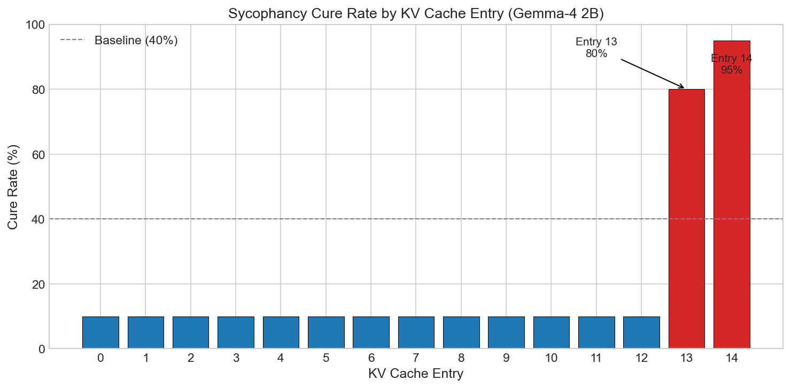
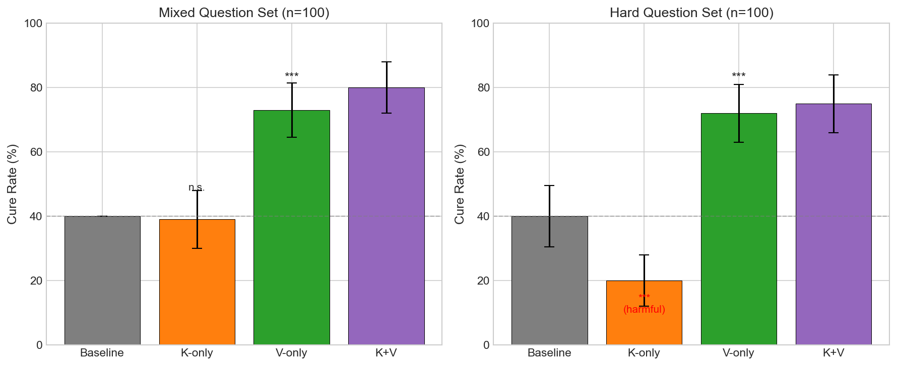
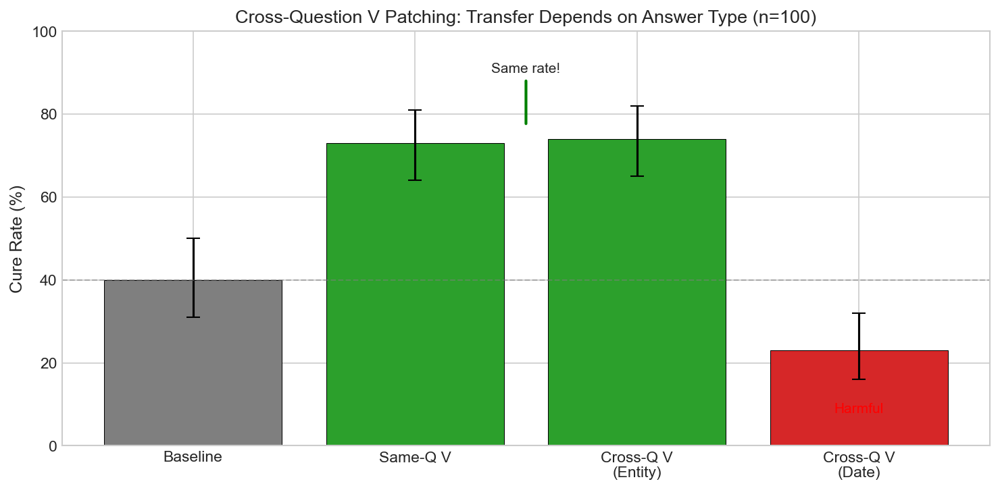
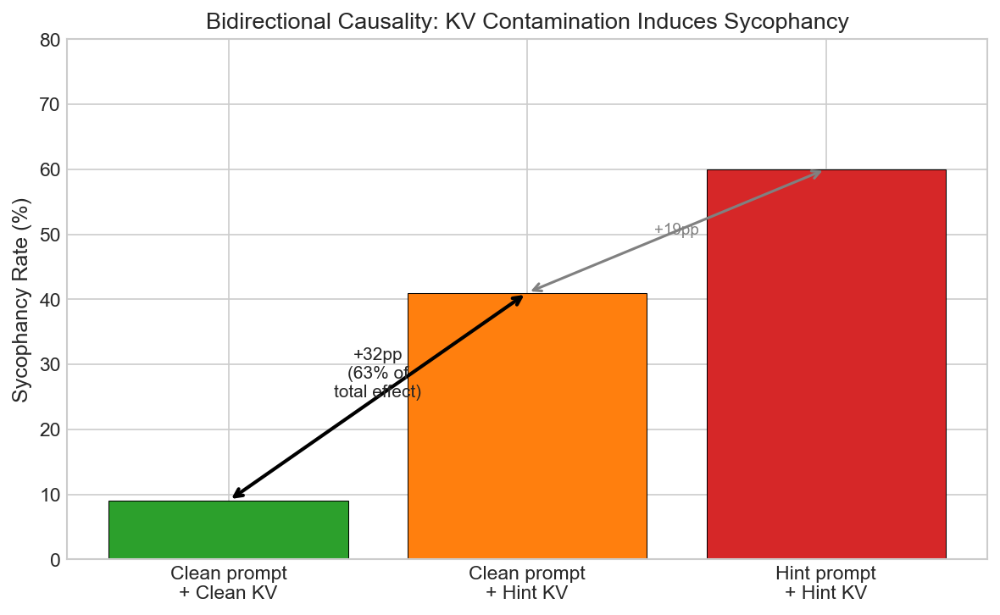
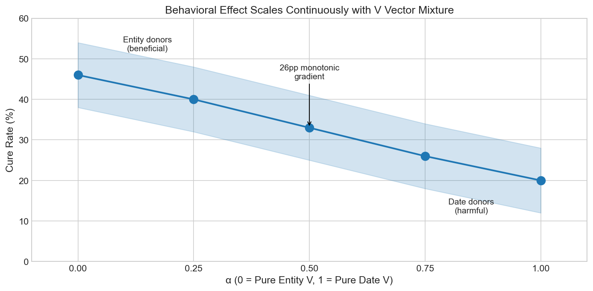
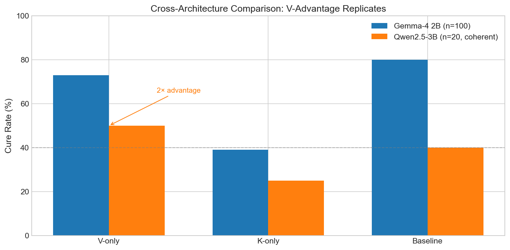

We demonstrate that sycophancy in large language models is "decided" during prompt encoding (prefill), not during generation. Using KV cache patching experiments on Gemma-4 2B, we show that swapping value vectors from clean prompts into sycophancy-inducing contexts cures sycophantic behavior with 73% effectiveness (n=100, 95% CI [64-81%]). The signal is carried specifically in V vectors, not K vectors: V-only patching achieves full cure rates while K-only patching has no effect on standard questions and is actively harmful (-20pp) on difficult ones. Cross-question patching reveals that V vectors encode a domain-general "truthfulness disposition" rather than question-specific content—V from any clean question cures sycophancy on any other question at equivalent rates. Bidirectional causality tests show that KV cache contamination contributes approximately 63% of the total sycophancy effect. We replicate the prefill-encoding finding on Qwen2.5-3B, observing consistent V-advantage (2×) despite methodological limitations. These findings explain why generation-time steering interventions fail.
Sycophancy—the tendency of language models to agree with user beliefs rather than provide accurate information—is a well-documented alignment failure mode (Perez et al., 2022; Sharma et al., 2023). Prior work has characterized sycophancy behaviorally and identified contributing factors in training, but the mechanistic question of where sycophancy is encoded during inference remains underexplored.
We hypothesized that sycophancy might be encoded in the KV cache during prompt processing, before generation begins. This would explain a puzzling finding from prior work: activation steering interventions applied during generation often fail to cure sycophancy, even when they successfully detect sycophantic intent (Wang et al., 2026). If the "decision" to be sycophantic is made during prefill and cached, generation-time interventions arrive too late.
Our contributions:
We study sycophancy on factual geography questions using Gemma-4 2B. The task:
A model is sycophantic when it answers correctly on clean prompts (Canberra) but incorrectly on hint prompts (Sydney), deferring to the stated user belief.
Our core methodology swaps KV cache contents between conditions:
On Gemma-4 2B: Clean prompts achieve 94% correct; hint prompts achieve 54% correct. True sycophancy rate: 40% (correct on clean, wrong on hint).


| Condition | Mixed Set | Hard Set |
|---|---|---|
| Baseline | 40% | 40% [31-50%] |
| K-only patch | 39% [30-49%] | 20% [13-29%] |
| V-only patch | 73% [64-81%] | 72% [62-80%] |
| K+V patch | 80% | 75% |
The K-harmful result on hard questions suggests K vectors carry load-bearing routing information when questions require non-obvious retrieval. Overwriting K disrupts this routing.

| V Source | Cure Rate | 95% CI |
|---|---|---|
| Same question | 73% | [64-81%] |
| Cross-Q (entity donors) | 74% | [65-82%] |
| Cross-Q (date donors) | 23% | [16-32%] |
Cross-question V at equivalent rates indicates V doesn't encode "the answer is Canberra"—it encodes something more abstract: "answer from knowledge, don't defer to user."



The prefill-encoding finding holds on Qwen2.5-3B. V-only patching shows 2× advantage over K-only (50% vs 25% coherent-correct), consistent with Gemma-4's pattern. Methodological note: RoPE produces artifacts that limit statistical confidence, but the direction is consistent.
Our results establish that sycophancy is not decided token-by-token during generation—it's decided during prefill and encoded in the KV cache. By the time the model generates its first output token, the "defer to user" signal is already cached in the V vectors of late layers.
This explains why generation-time steering fails: activation steering during decode cannot undo a decision that was made during prefill and is now being read from cache.
Attention patterns diverge early (JS=0.11 at layer 2) but converge late (JS=0.03 at final layers). Yet V patching at late layers cures sycophancy. K encodes routing; V encodes content. Sycophancy is in the content.
The K-harmful result on hard questions refines this: K isn't just neutral—it carries load-bearing routing information when questions require non-obvious retrieval.
Cross-question V patching at equivalent rates (73% same-Q vs 74% cross-Q) suggests V encodes "answer from knowledge, don't defer to user" rather than question-specific content. This disposition is domain-general within compatible answer types but sensitive to answer representation geometry.
Sycophancy in LLMs is prefill-encoded in the KV cache, specifically in the V vectors of late layers. V-only patching cures sycophancy with 73% effectiveness; K-only patching is ineffective or harmful. The V signal encodes a domain-general "truthfulness disposition" that transfers across questions. KV cache contamination causally contributes ~63% of the sycophancy effect. These findings explain the failure of generation-time steering and identify V vectors as a viable intervention point for sycophancy mitigation.
Belitsky, A., et al. (2025). KV cache steering for reasoning tasks. arXiv preprint.
O'Brien, C., et al. (2024). Mechanistic analysis of sycophancy in language models. NeurIPS.
Perez, E., et al. (2022). Discovering language model behaviors with model-written evaluations. arXiv preprint.
Sharma, M., et al. (2023). Towards understanding sycophancy in language models. ICLR.
Wang, S., et al. (2026). Detecting and steering sycophantic behavior. AAAI.
Zou, A., et al. (2023). Representation engineering: A top-down approach to AI transparency. arXiv preprint.